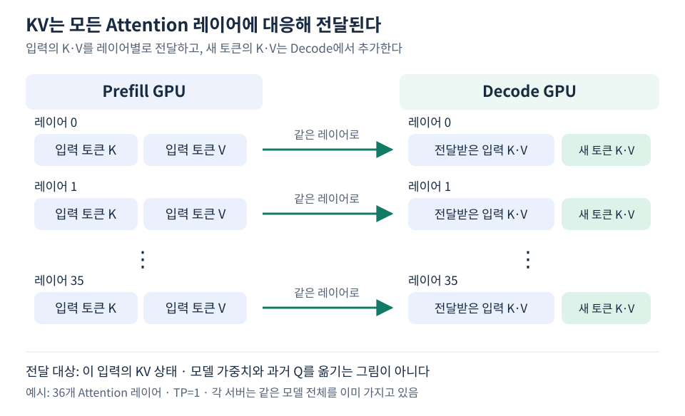

Prefill과 Decode를 다른 서버에서 실행하려면 무엇을 넘겨야 할까? 핵심은 모델을 옮기는 것이 아니라, 그 모델이 특정 입력을 처리해서 만든 상태를 옮기는 것이다. 이 문서는 일반적인 causal Attention 모델의 KV Cache와 P/D 인계의 관계를 설명한다.
Prefill은 입력 토큰의 K·V를 각 레이어에 만든다
입력 토큰은 모델의 레이어를 통과하며 Q·K·V로 투영된다. Attention은 Q로 K를 비교하고 그 결과로 V를 조합한다. 이후 토큰을 생성할 때 과거 토큰의 K·V를 다시 사용할 수 있도록 저장한 것이 KV Cache다.
이 캐시는 마지막 레이어에만 있는 하나의 벡터가 아니다. 예시 모델에서는 36개 Attention 레이어 각각에 입력 토큰들의 K·V가 있다. 새 토큰을 처리할 때도 각 레이어에서 그 레이어의 과거 K·V를 사용한다.

Q는 현재 처리 중인 토큰이 과거 토큰을 참조하는 데 사용한다. 일반적인 KV Cache에는 과거 Q까지 계속 보관해 전달하지 않는다. 또한 Attention 점수 행렬 전체나 모델 가중치를 이 요청의 KV 전송량에 포함시키지 않는다.
캐시가 있으면 과거 계산을 재사용하지만 새 계산은 남는다
KV가 도착했다고 Decode가 이미 만들어진 답변을 읽어 오는 것은 아니다. 새 토큰을 위한 모델 계산과 다음 토큰 선택은 계속 수행해야 한다. 캐시의 역할은 과거 구간의 K·V를 반복 생성하는 일을 줄이는 것이다.
Prefill에서 첫 생성 토큰을 정할 수도 있으므로 “Prefill은 토큰을 절대로 출력하지 않는다”는 구분도 맞지 않는다. 관찰한 P 요청은 max_tokens=1이었다. 다만 이 자료의 NIXL 요청 연결은 P가 출력한 토큰을 D 입력에 임의로 이어 붙이는 방식이 아니다. 실제 첫 토큰 처리 계약은 원래 입력과 KV 정보가 이어지는 요청 흐름을 따른다.
세 종류의 정보가 있어야 인계를 이해할 수 있다
| 정보 | 의미 | 이 구성에서의 위치 |
|---|---|---|
| 모델 가중치 | 모든 요청에 쓰이는 학습된 파라미터 | P와 D가 같은 모델을 각자 로딩 |
| 입력·생성 조건 | 무엇을 입력으로 받아 어떻게 생성할지 | 조정 코드가 P/D HTTP 요청을 구성 |
| KV 상태·전달 정보 | 이 입력의 계산 결과와 그것을 가져올 위치 | KV는 P에 보관, 메타데이터는 응답을 통해 D에 전달 |
KV 메타데이터는 KV 자체가 아니고, KV 자체도 완전한 요청 객체가 아니다. 그러므로 D에 원래 입력과 생성 조건을 함께 보낸다. 입력을 보내는 행위와 전체 입력을 다시 계산하는 행위는 구분해야 한다.
같은 입력 문자열만 맞추면 어떤 모델의 KV든 사용할 수 있는 것도 아니다. 가중치·토큰화·위치 처리·KV 형식 등이 대응해야 한다. 예시에서는 같은 모델 Revision, 토크나이저, BF16과 TP=1 설정을 맞췄다. 다른 모델 사이 캐시 교환을 확인한 것은 아니다.
원격 KV 수신과 Prefix Cache 적중은 다른 질문이다
Prefix Caching은 이미 가진 접두 구간의 KV를 재사용하는 기능이고, P/D 전달은 다른 엔진이 만든 KV를 수신하는 흐름이다. 이 자료의 서버는 Prefix Caching을 껐지만 NIXL을 통해 원격 KV를 받았다. 따라서 Prefix cache hit만 보고 원격 KV 사용 여부를 판단하지 않는다.
확인한 것은 수신 전송 증가와 external_kv_transfer 입력 토큰 증가다. 이것이 어떻게 측정됐는지는 KV 전달을 어떻게 측정할까?, 메모리 크기는 KV 크기와 블록 단위 전송량에 정리했다.